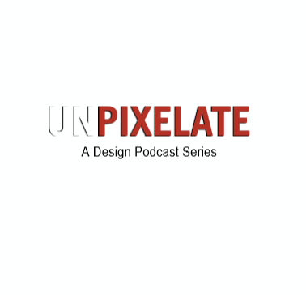

UnPixelate
We hope to create an Indian community for design by bringing in the best designers of India on a podcast series to talk about their principles and experiences within this field. Over the last 2 months, we have gotten designers from Apple, Amazon and Flipkart on board as our speakers.
